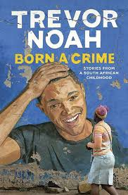

By Trevor Noah
Trevor, the book's protagonist, the son of Patricia, a South African woman who is present in his life throughout the chapters. We learn about love, religion, apartheid, humor, and family. Noah discusses the church and his mother's devotion to religion. They attended the mixed-racial church which was jubilant, the all-white church was analytical and centered on a thorough study of the scriptures and the last one was for all blacks.Trevor had a narrow escape from death. His mother once flung him from a moving minibus and then jumped herself. His mother explains it was for their safety. She later praised God for saving both of them.
The second chapter delves into South Africa's history, namely how colonization and apartheid were built on tribal and racial differences. Trevor was born in 1984 to a white father and black mother which was against the law. Hence he refers to being born a crime.To avoid being taken by the police, his grandmother forced him to play indoors.Patricia is fearless. She ran away from home to live and work in Johannesburg which was illegal for black people to live within city limits. She had sexual relations with a white man which was against the law at the time.
Growing up I spent the most time with my relatives. I felt I never belonged. Some were welcoming and some never took me in as their own. I had no say in that but I would have loved it if they treated me better.